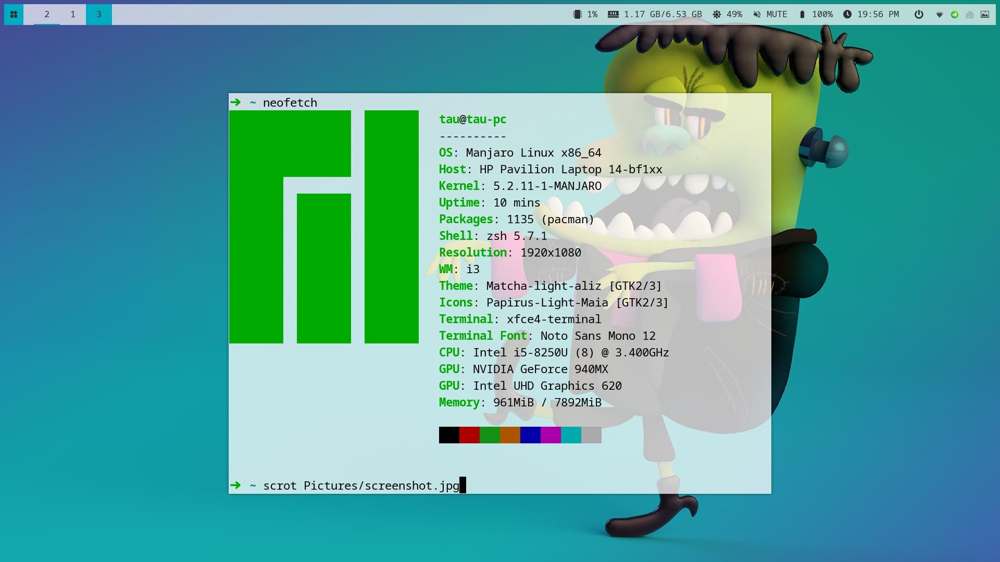

Manjaro i3 配置

从 Windows 转战到 Linux 后，我用过 Elementray OS，国产的 Deepin，现在又换到了 Manjaro 。前面两个虽然总体上还算稳定，但是总是有一些小瑕疵让我难以忍受。例如 Deepin 的特效和动画总是有奇怪的线条出现，而且UI设计对 MAC OS 的模仿太明显了。
Manjaro 是在B站上看到有up主推荐知道的。我下载的是 xfce 的版本，然后把桌面环境换成了 i3 。
Manjaro 最好用的应该是它的软件包管理，pacman 比 apt 方便了不少，软件比较全且新，不需要手动添加很多软件源。
使用了大概有一周的时间，稳定性比起 Ubuntu 类的系统有过之而无不及。
下面记录的是我使用的一些软件和我的配置。
pacman 配置
添加 ArchlinuxCN 镜像
我使用的是清华的镜像，配置可以参考 ArchlinuxCN 镜像使用帮助。
修改配置文件后一定要安装 archlinuxcn-keying 导入 GPG key：sudo pacman -S archlinuxcn-keyring， 否则安装软件会失败。
更换中国源
这是表现 pacman 比 apt 好用的地方。直接输命令 sudo pacman-mirrors -c China 会自动选择对你来说速度更快的镜像。-c 是 country 的意思。
i3
i3 是一个平铺式的窗口管理器，所有的操作都可以用键盘直接完成。熟练了 i3 的快捷键后可以极大地提高工作的效率。
我的 i3 配置比较简单，只是添加了几个启动项，把默认的方向快捷键 jkl; 改成 vim 默认的 hjkl，还去掉了不太漂亮的边框。
想要自己增加一些快捷键，可以用 xmodmap 查看一下按键的名称。
xrandr 配置多显示器
i3 是不会像别的桌面环境自动检测多显示器，需要自己配置外接的显示器。
我这里使用的工具是 xrandr。直接输入这个命令会输出你所用显示器的信息。
我的主显示器是 eDP1，副显示器是 HDMI1。主显示器会自动开启，副显示器不会默认打开。
我可以输入 xrandr --output HDMI1 --auto --right-of eDP1 开启我的副显示器，HDMI1 在 eDP1，所以用了 --right-of。
为了避免每次开机都需要重新输入命令的麻烦，可以写一个脚本在每次 i3 启动时自动检测是否插入副显示器。
#!env /bin/bash
hdmi=$(xrandr | grep 'HDMI1 connected')
if [ "$hdmi" != "" ]; then
xrandr --output HDMI1 --auto --right-of eDP1
else
xrandr --output HDMI1 --off
fi
在 i3 的配置文件里面将上面的脚步添加为 exec_always。这样每次启动的时候，可以自动决定是否开启副显示器。
如果在运行过程中卸载或装载显示器，可以通过快捷键重启 i3。
触控板
触控板默认的滑动方向我不是很习惯，而且不能轻触点击。我添加了配置改变触控板的默认设置，具体的文档可以参考 libinput。
下面是我的配置，配置文件需要放在 /usr/share/X11/xorg.conf.d/ 目录下。
Section "InputClass"
Identifier "touchpad"
Driver "libinput"
MatchIsTouchpad "on"
Option "Tapping" "on"
Option "AccelSpeed" "0.6"
Option "HorizontalScrolling" "on"
Option "NaturalScrolling" "True"
EndSection
i3lock
i3lock 是锁屏软件。 我使用的是一个 fork 版本 i3lock-color, 它比原版增加了颜色的设置。
下面是我的启动脚步，用到了截图软件 scrot：
#!/bin/bash
TMPBG=/tmp/screen.png
scrot $TMPBG && convert $TMPBG -scale 5% -scale 2000% $TMPBG
i3lock \
-i $TMPBG \
--insidecolor=0000001c \
--ringcolor=0000003e \
--linecolor=00000000 \
--keyhlcolor=ffffff80 \
--ringvercolor=ffffff00 \
--separatorcolor=22222260 \
--insidevercolor=ffffff1c \
--ringwrongcolor=ffffff55 \
--insidewrongcolor=ffffff1c \
--verifcolor=ffffff00 \
--wrongcolor=ff000000 \
--timecolor=ffffff00 \
--datecolor=ffffff00 \
--layoutcolor=ffffff00
rm $TMPBG
锁屏界面：
i3 的具体的配置可以看看我的i3配置.
polybar
i3 也有一个 bar 叫 i3-status, 简单的显示足够了，想要更丰富的信息显示可以使用 polybar。
polybar 的配置最麻烦了。要想得到比较好看的效果最好在别人的基础上修改。 我的配置文件是在 polybar-theme 的基础上修改而来的，增加了一些 module 和多显示器的支持。 配置文件需要根据自己的硬件修改，官方的文档有详尽的说明。
其他软件
- rofi 可以作为一个启动器使用，功能很强大。
- oh-my-zsh 我的shell是 zsh ，当然要用 oh my zsh。
- compton 这个是一个原版的 fork ，可以实现毛玻璃效果。
- nvim 从 vim 切换到了 nvim。无痛切换，因为我才入坑 vim 不久 :) 。
- onedrive 一个命令行的 onedrive, 用 D 语言构建，目前感觉很好用。
- [variety] (https://github.com/varietywalls/variety) 自动切换壁纸。
最后
我的配置文件放在了github上 dotfiles。
自己手动配置了很多东西后才发现开源的可贵，我现在使用的大多数软件都是开源的。感谢所有为开源软件做贡献的开发人员，他们为我们提供了无数的好用的软件。希望我在不久的将来也能为开源软件做点贡献。